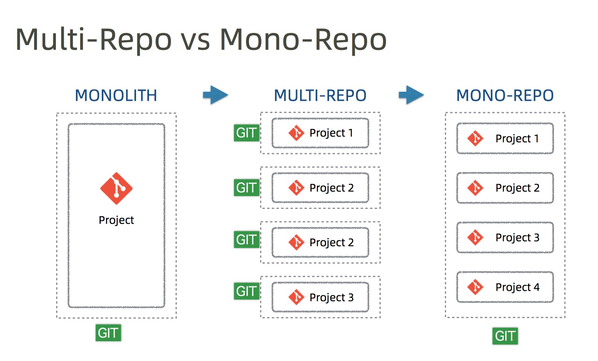

我在去年和前年主导了公司两个产品后端的技术选型和整体架构，并分别尝试了两种源码组织模式：多仓库和单体仓库。对两种仓库的利弊也有了很大程度上的感受，基于这个前提对这两种模式做个总结。
阅读本文后你会明白：什么是单体仓库？为什么 Google 采用单体仓库？
单体应用和微服务应用
在介绍单体仓库和多仓库前，先来说说什么叫单体应用和微服务应用。
微服务相比单体应用最大的好处是可以独立的开发测试部署和扩展。单体应用一般采用单体仓库，但是微服务的代码仓库该如何组织呢？一定是每个服务一个仓库吗？
其实也不一定，针对微服务的代码组织，业界有两种主要的实践，一种是多仓库（multi-repo）也就是每个服务开一个源码仓库，另一种叫单体仓库（mono-repo）所有源码都在同一个仓库中，尽管整个应用采用的微服务架构。

多仓库
单体仓库和多仓库都是有利有弊的。
多仓库的好处是显而易见的：
- 每一个服务都有一个独立的仓库，职责单一。
- 代码量和复杂性受控，服务由不同的团队独立维护、边界清晰。
- 单个服务也易于自治开发测试部署和扩展，不需要集中管理集中协调。
多仓库存在的问题：
- 项目代码不容易规范。每个团队容易各自为政，随意引入依赖，code review 无法集中开展，代码风格各不相同。
- 项目集成和部署会比较麻烦。虽然每个项目服务易于集成和部署，但是整个应用集成和部署的时候由于仓库分散就需要集中的管理和协调。
- 开发人员缺乏对整个项目的整体认知。开发人员一般只关心自己的服务代码，看不到项目整体，造成缺乏对项目整体架构和业务目标整体性的理解。
- 项目间冗余代码多。每个服务一个服务一个仓库，势必造成团队在开发的时候走捷径，不断地重复造轮子而不是去优先重用其他团队开发的代码。
单体仓库
单体仓库可以解决部分上边提到的问题。
单体仓库的好处：
- 易于规范代码。所有的代码在一个仓库当中就可以标准化依赖管理，集中开展 code review，规范化代码的风格。
- 易于集成和部署。所有的代码在一个仓库里面，配合自动化构建工具，可以做到一键构建、一键部署，一般不需要特别的集中管理和协调。
- 易于理解项目整体。开发人员可以把整个项目加载到本地的 IDE 当中，进行 code review，也可以直接在本地部署调试，方便开发人员把握整体的技术架构和业务目标。
- 易于重用。所有的代码都在一个仓库中，开发人员开发的时候比较容易发现和重用已有的代码，而不是去重复造轮子，开发人员（通过 IDE 的支持）容易对现有代码进行重构，可以抽取出一些公共的功能进一步提升代码的质量和复用度。
在工业界，世界上采用单体仓库管理源码的公司并不少，如 Google、Facebook、Twitter 这些互联网巨头，包括通过去年B站泄露的源码也可以看出，B站也是用的单体仓库进行的管理。虽然这些公司系统庞大、服务众多，内部研发团队人数众多，但是依然采用了单体仓库并且都很成功。
单体仓库也是有弊端的，随着公司业务团队规模的变大，单一的代码库会变得越来越庞大复杂性也呈极度的上升，所以这些互联网巨头之所以能够玩转单体仓库，一般都有独立的代码管理和集成团队进行支持，也有配套的自动化构建工具来支持，如 Google 自研的面向单体仓库的构建工具 Bazel：https://bazel.build/ 和 Facebook 的 Buck：https://buck.build/。
初创公司在早期服务不是特别多的情况下，采用单体仓库比较合适。
##总结：
微服务架构并不是主张所有的东西都要独立自治，至少代码仓库就可以集中管理，而且这也是业界的最佳实践之一。